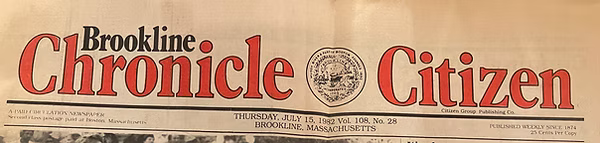
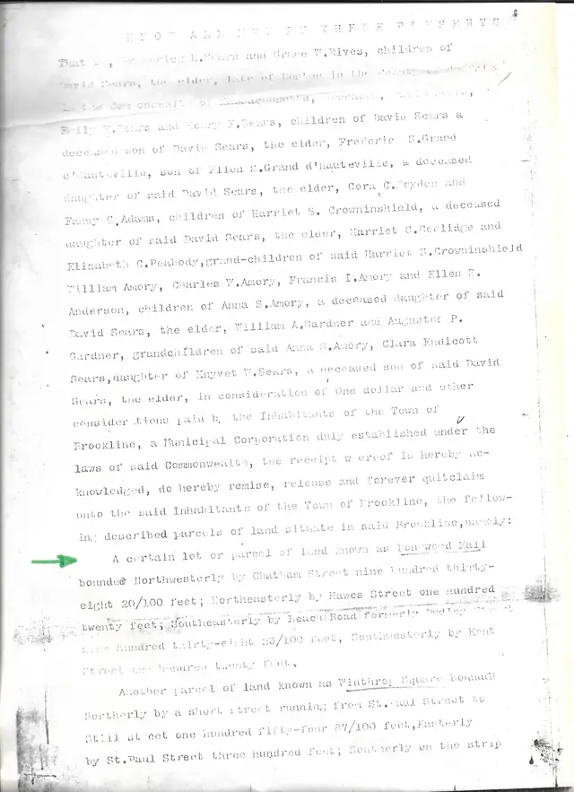
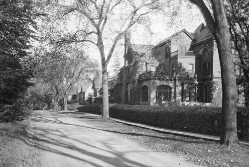

1982: Origins of the Friends of Longwood Mall
How a group of neighbors organized to protect the grove, as told in the original newsletters.
Since the 1840s
Articles, documents, and photographs tracing Longwood Mall from David Sears's 1840s plantings to today.

How a group of neighbors organized to protect the grove, as told in the original newsletters.

The Sears family deed that gave Longwood Mall to the Town of Brookline as public parkland.

How the nearby Rose Garden park became the playground it is today.

Postcards, photographs, and maps of the mall from 1855 onward.
The history of the Longwood and Cottage Farm neighborhoods.
The Boston merchant who planted the beech grove and laid out Longwood.